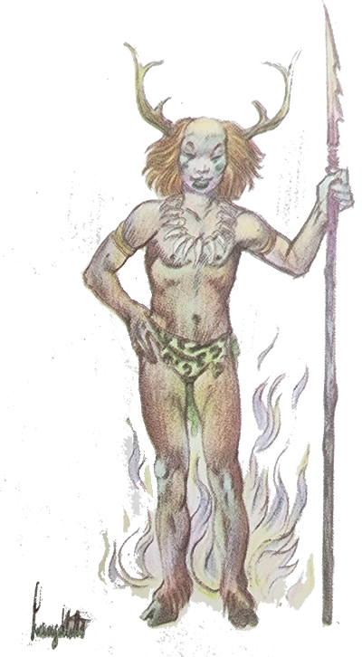
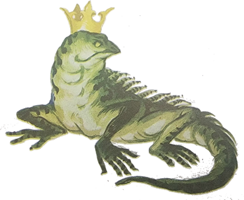
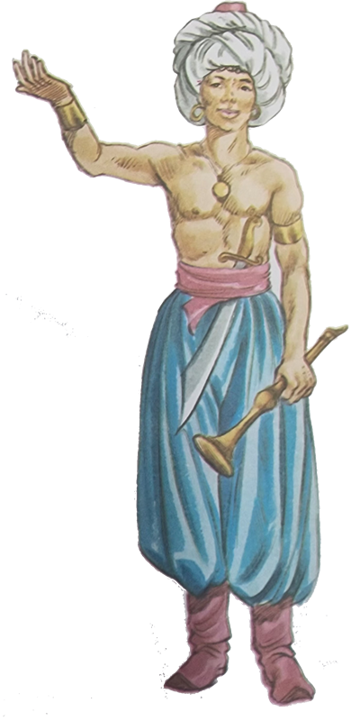
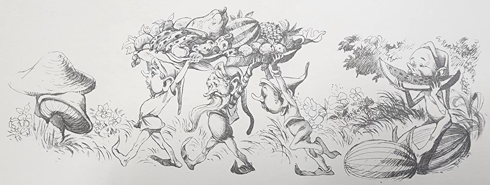
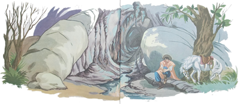
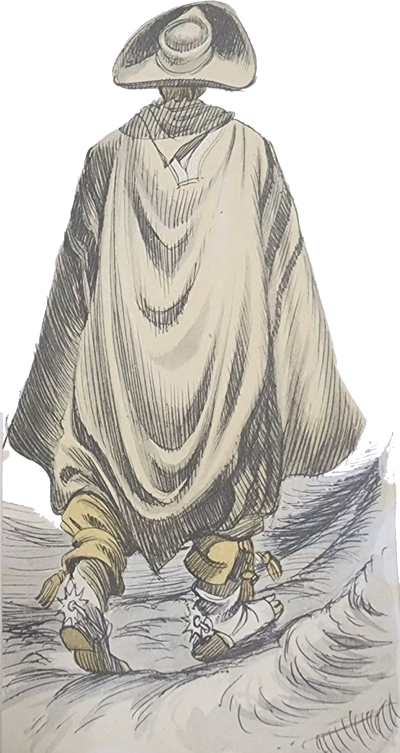
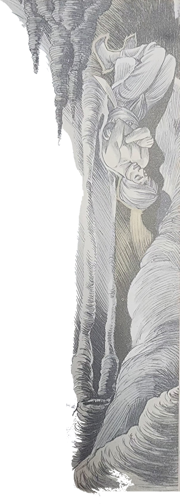

O Arrelia e as crianças descansavam à sombra de uma carreta. Haviam comido tanto churrasco que não sentiam vontade de fazer nada, a não ser ficar cochilando. O primeiro a recuperar-se da modorra foi Sérgio. Ainda deitado, pôs as mãos sob a cabeça e ficou contemplando o céu muito azul, por onde não passava uma nuvem. Depois se sentou, esfregou as vistas e olhou os companheiros: todos cochilavam. Levantou-se, enfiou as mãos nos bolsos e começou a andar por ali, sem destino. Por fim subiu a um morro coberto de pedras, sentou-se e começou a pegar as menores, jogando-as o mais longe possível, sem visar nenhum alvo. Ao apanhar uma das pedras, viu qualquer coisa sair correndo do meio delas e, assustado, desceu o morro aos gritos. O Arrelia, que estava meio embaixo da carreta, acordou-se com os berros e procurou levantar-se, dando uma cabeçada no fundo do veículo. Saiu um pouco tonto, perguntando:
- Quem me bateu? O que foi? É uma briga?
Todos os outros também ficaram assustados, ouvindo o que Sérgio dizia sem nada compreenderem, tal a pressa com que ele falava. O Arrelia, não vendo nada de grave, tranquilizou-se e pediu a Sérgio:
- Calma! Fale mais devagar! Você não é assim . . . Engoliu uma vitrola? Puxa!
O menino conseguiu controlar-se e contou que vira um bicho estranho correr entre as pedras. Ficara tão assustado que não sabia dizer o que era: parecia um pequeno lagarto ou talvez fosse uma cobra.
- Já que não houve nada de grave a não ser a “batiuda” que dei na cabeça – disse i Arrelia, passando levemente a mão pelo lugar da pancada – você não precisa ficar “apavoraudo”. Vai ver que era a Salamandra do Jarau. A cabeça não era de pedra brilhante?
- Cabeça de pedra brilhante? – interrogou Sérgio, espantado.

- Que é isso – perguntou Jaci. Você andou sonhando, Arrelia?
- Não andei sonhando, não – afirmou o Arrelia. Vamos para baixo da carreta que o Sol já está batendo que e eu lhes conto a estória.
Depois de acomodar-se o melhor que pode, o Arrelia começou:
- Há vários séculos atrás, alguns mouros, obrigados a fugir da Espanha, vieram dar no Sul do Brasil. Eles traziam sua jovem princesa transformada, por magia, numa velhinha, a fim de que não fosse reconhecida e aprisionada. Logo que chegaram, deram com os Anhangá-pitã, o diabo dos índios. Contaram-lhe toda a estória e o demônio prometeu ajudá-los, pois viu na princesa um motivo de fazer maldades aos outros. Para começar, transformou-a numa salamandra de cabeça de pedra brilhante e mandou-a viver numa lagoa ali perto. Depois espalhou a notícia de que a pessoa que visse a salamandra poderia ter seus desejos realizados. Logo formou uma confusão daquelas! Vocês podem imaginar. O primeiro que chegou, foi transformado no guardião e guia da salamandra. Ficou desesperado para livrar-se do encantamento, mas nada conseguiu. Anhangá-pitã disse-lhe:
- Você somente conseguirá quebrar o encantamento deste lugar quando surgir alguém capaz de vencer todas as provas e depois de conseguir realizar o seu desejo, desistir dele. Até lá será o guardião e guia da princesa.
O guardião logo percebeu que era mais certo jamais sair dali. É claro que quantos mais homens tentassem as provas, mais possibilidades haveria para ele livrar-se da magia. Assim, ele próprio começou a espalhar a estória da salamandra. Muitos homens apareciam, mas eram poucos os que possuíam coragem para iniciar as provas. As mulheres, então, nem pensavam em chegar perto dali.
- E que provas eram essas? – quis saber Carlinhos.


- Eram provas de coragem que precisavam ser feitas dentro de uma enorme gruta – esclareceu o Arrelia. Eram muitas e não sei quais eram todas. Sei que algumas eram de arrepiar os “cabeulos”: passar por um lugar cheio de cobras venenosas, quase completamente no escuro, caminhar dentro do fogo vários metros e assim por diante. Uma pior do que a outra.
Por ordem, quem quisesse ver o seu desejo realizado precisava fazer i seguinte: procurar o guardião e guia da salamandra. Cumprir as provas, conhecer a salamandra. Depois era só dizer o que desejava.
- Até que não era difícil! – exclamou Iberê.
O Arrelia quase que deu outra cabeçada na carreta:
- Não era difícil? Você diz isso porque não estava lá! A passagem pelas cobras era a primeira prova! E ninguém chegava a terminá-la!
Até que era “engraçaudo”. O camarada falava com o guardião e, animado por suas palavras, partia firme para as provas. Entrava ba gruta com toda a coragem possível. Chegava à sala das cobras venenosas. Escuridão quase completa. Mal dava para divisar os vultos que se movimentavam impacientes. A coragem começava a desaparecer. Quando ouvia o guizo de uma cascavel que se aproximava, o pobre perdia a cabeça e saía correndo que nem louco. Muitas vezes o guardião foi atropelado pelos fujões em pânico e levou cada tombo! Por fim, ele ficava bem longe da porta da gruta, já com pouca esperança de conseguir quebrar o encantamento. Via o “candidato” entrar na gruta, esperava um pouco e pronto! O homem saía de olhos esbugalhados, os braços erguidos e abrindo a boca:
- Nunca mais faço isso! Nunca mais! Salve-me! – e lá ia pela campina afora.
Tantos homens repetiram a mesma coisa que acabou formando um caminho liso, mas tão liso que dava para escorregar. Havia passado muitos anos e o guardião perdera toda a esperança de livrar-se da magia. Se ninguém conseguia fazer as provas, o vencedor, se um dia surgisse um, não ia abrir mão de seu prêmio! Que dúvida! Assim, ele foi ligando cada vez menos para os que apareciam. Ficava por ali de cabeça baixa, sozinho com seus pensamentos, e tão desinteressado estava que nem levantava a cabeça ao ver alguém sair correndo da caverna das provas.
O guardião encontrava-se um dia sentado perto da lagoa quando viu surgir um moço em sua direção. “Mais um para correr . . .” – pensou. O moço chegou, apresentou-se e disse que desejava fazer as provas. Havia alguma cousa nas suas feições e nas suas maneiras que impressionou o guardião. “Seria capaz de jurar que esse gaúcho é capaz de vencer todas as provas. Mas não é impossível!.
O guardião levou-o até à gruta e deixou-o só. O gaúcho penetrou na escura caverna e logo se encontrou na sala das cobras venenosas. Era valente o homem. Não arredou pé. Foi andando, andando. Aqui, pisando numa cobra, ali, chutando outra. Serpentes enormes caíam do alto! Nada. Manteve-se firme. Sua coragem era tanta que nenhuma chegou a mordê-lo.
Na sala do fogo também foi igual. Entrou pelas labaredas como se nada fossem e o fogo não o queimou.
- Não é brincadeira, não, Arrelia? – interrompeu Jaci. É preciso coragem!
- Pois é – continuou o Arrelia, ajeitando-se e quase dando outra cabeçada. Com tanta coragem, conseguiu fazer todas as provas. Ao sair, foi cumprimentado pelo guardião:
- Você venceu, moço. Vou levá-lo à presença da salamandra para que se realize o que você deseja.
O moço fez sim com a cabeça e seguiram para um ponto na beira da lagoa.
Tão logo chegaram, o guardião começou a executar uma estranha dança e a dizer palavras árabes. Ficou fazendo aquilo um tempão, os olhos fixos na água. O gaúcho a tudo acompanhava com surpresa. Tinha a impressão de que o guardião logo ia entregar os pontos, mas o homem parecia de borracha. Finalmente a água estremeceu, uma coisa estranha surgiu e veio nadando para a terra. Rastejando-se, chegou perto do moço que a olhava com espanto. Era uma salamandra com cabeça de pedra preciosa, cujo brilho obrigava a gente a piscar. O guardião parou de dançar e cantar e, arquejante, curvou-se respeitosamente diante da salamandra. Houve um estouro e no lugar da salamandra surgiu a princesa moura. O gaúcho continuou firme. Ela disse-lhe depois de haver ouvido o guardião:
- A estupenda coragem que você manteve durante todas as provas tornou-o merecedor de um prêmio, de um valioso prêmio. Diga-me o que mais deseja e será atendido prontamente.
A resposta do gaúcho deixou os dois espantados:
- Não, não desejo nada. Minha intenção era competir, mais nada.
A princesa ficou “encantauda” e o guardião “desiludiudo”, pois se o moço não aceitasse alguma coisa e desistisse depois, jamais seria quebrado o encantamento.
- Que bobo, mas que bobo! – exclamou Jaci.
- Ué, por que? – estranhou o Arrelia.
- Se fosse eu – continuou a menina – pediria tanta coisa! Um castelo cheio de bonecas, um tapete mágico para viajar por todo o mundo . . .
Nenhuma das outras crianças quis deixar de revelar pelo menos um desejo. Uma queria uma fábrica de balas, outra, uma de brinquedos . . . Formou uma confusão debaixo da carreta que fez o Arrelia sair correndo. Depois que as crianças entraram num acordo, ele voltou e acomodou-se outra vez.
- Vem – continuou – a princesa insistiu o mais que pode e nada conseguiu. Ele não aceitou nada. Ela ficou triste, transformou-se na salamandra e voltou para a lagoa, pois embora houvesse admirado o desinteresse do moço, queria que ele aceitasse o prêmio, conforme fazia parte do encantamento. O gaúcho montou a cavalo. O guardião ainda possuía um trunfo e antes que o moço partisse, falou-lhe:

- Quero que leve uma lembrança daqui. Tome – e apresentou-lhe uma brilhante moeda de ouro. Sei que é pobre e, portanto, quando você precisar de dinheiro, segure esta moeda dentro da bolsa que logo surgirão outras.
Como se tratava de uma lembrança, o gaúcho foi obrigado a aceitá-la. Guardou a moeda numa grande bolsa de couro que levava sempre à cintura e partiu. O guardião ficou ali, olhando-o até vê-lo sumir ao longe.
Durante uns dias, o gaúcho não se lembrou mais do acontecido. Tinha sido apenas mais uma aventura. Nem da moeda ele se lembrou mais. Acabou por encontrar, porém, um conhecido que desejava vender um belo revólver. Exatamente como ele sempre cobiçara. Quanto custava? Cinco moedas de ouro. Que pena! Não tinha mais do que uma. Ah! Quam sabe? Talvez tivesse mais no fundo da bolsa. Fingindo que procurava mais dinheiro, segurou a moeda que o guardião havia dito ser mágica e logo surgiram cinco moedas na sua mão, mas uma a uma e demorou um pouco, compreendem? O moço comprou o revólver, e o outro, recebendo as moedas, partiu, não sem dizer antes, brincando:
- Que moedas difíceis, hein> Custaram para sair. O amigo não gasta facilmente, não.
O moço corrigiu:
- Nada disso. É que as moedas são poucas e as divisões da bolsa são muitas. Servem apenas para guardar vento.

O moço pegou gosto pela coisa e sempre que desejava fazer uma compra era só segurar a moeda mágica. Uma a uma surgiam as moedas necessárias. Só que o mar era aquele. As moedas vinham sempre uma por uma. Não tinha outro modo. Certa vez, apareceu-lhe um negócio muito bom, só que de grande vulto. Um amigo queria desistir de criar gado e ofereceu-lhe os bois que possuía, uns dez mil, por um preço irrisório. Mesmo assim, como era um negócio de vulto, o gaúcho precisava de três mil moedas. Já pensaram o que é tirar três mil moedas de uma bolsa, uma por uma?
- Arre! – exclamou Jaci. Antes contar estrelas. É menos cansativo.
- É? E as berrugas? – perguntou Carlinhos. Você não sabe que nascem berrugas nas pontas dos dedos de quem conta estrelas?
Jaci não se conformou:
- Que menino atrasado! Imaginem só, nascer berrugas . . . – mas não deixou de olhar disfarçadamente para a ponta dos dedos, pois ela gostava de contar estrelas.
- Depois de esperar um pouco – continuou o Arrelia – o vendedor não aguentou mais:
- Cué-puxa – exclamou levantando-se. Que maneira mais esquisita de tirar dinheiro! Vire a bolsa, amigo! Não tenha medo, não.
O outro ficou todo “envergonhaudo” e desculpou-se:

- Não se espante. É um velho hábito meu. Não sei contar dinheiro de outra forma.
O vendedor deu risada e disse-lhe:
- Está certo. Vou cuidar de uns negócios que tenho por aí e volto no fim do dia. Do jeito que você vai indo, não acaba tão cedo, não.
Ele saiu e deixou o moço atarefado em contar moeda por moeda. Ao voltar, no fim do dia, o dono da moeda mágica ainda estava em seu trabalho.
- Não disse? – caçoou o vendedor. Ainda não terminou de contar.
- Mas está no fim – garantiu o outro, aparentando estar meio morto de cansaço.
Logo depois o vendedor saiu levando o dinheiro. Ficara tão impressionado com o que acontecera que não deixava escapar uma oportunidade para falar sobre o dono da moeda mágica:
- Muito bom rapaz, não há dúvida. E está rico. Porém estranho é o modo que ele tem de tirar o dinheiro. Uma a uma ele tira as moedas! E devagar como se esperasse que cada moeda aparecesse!
Acontece que todos sabiam que o dono da moeda havia sido sempre pobre e jamais correra notícia sobre sua súbita riqueza. Isto mais o estranho modo de pagar fizeram o povo crer que se tratava de algo sobrenatural. Slguém se lembrou de o ter visto perto da lagoa e foi uma voz só: “Ele tem parte com o Diabo!”
Outros negócios foram realizados e tornaram ainda mais conhecido o estranho modo de pagar do gaúcho. Depois começou a correr a fama de que todo o dinheiro pago por ele dava só prejuízo. A partir de então, muitos não quiseram mais saber de vender-lhe nada. Tinha gente que se desviava quilômetros só para não encontrá-lo. Precisava fazer suas compras em cidades longe dali. De qualquer forma, ele não precisava mais da moeda mágica. Suas vendas davam-lhe bons lucros normais e a moeda foi aposentada. Com o tempo, ele foi aceito por todos e a vida foi passando. Mas não conseguia habituar-se com a riqueza. Quanta preocupação! Tinha saudade das suas andanças sem destino, das suas aventuras, dos lugares que conhecera. Agora era só compromisso daqui, compromisso dali!

Algum tempo depois, ele não aguentou mais. Só via um modo: desistir de tudo aquilo e continuar sua vida de antigamente. Começou a vender tudo o que havia ganho depois da moeda mágica. Todos ficaram bobos. “Tão bem que ele estava!” Depois que não tinha mais nada para vender, juntou todo o dinheiro apurado e entregou-o aos pobres. Agora sim. Estava livre como antes. Não era mais rico.
Já estava partindo para a sua primeira viagem quando se lembrou da moeda mágica que lhe fora presenteada pelo guardião da salamandra. Já que não desejava mais dinheiro, agora não encontrava nela mais nenhuma serventia. Procurou a bolsa, e num canto, bem escondida, encontrou a moedinha. Colocou-a ali outra vez, montou a cavalo e partiu.

O lugar ainda estava um tanto longe e o gaúcho ia meio cochilando. Assustou-se ao cruzar com um homem que passou gritando e correndo como um louco. O gaúcho pensou: “Estou no caminho exato. Esse vinha da gruta das provas” – e continuou em direção ao lugar.
Era noite quando se aproximou da lagoa. O lugar era mesmo de meter medo: soturno, escuro, frio. Deu a volta em torno da lagoa para ver se encontrava o guardião. Onde andaria o homem? Foi mais longe, rodeou, voltou. Ele devia ter saído. O que faria com a moeda? Talvez pudesse jogá-la na lagoa. Era um recurso. Não, não queria. Desejava devolver a moeda ao próprio guardião.
Amarrou o cavalo numa árvore e sentou-se perto da entrada da caverna, disposto a esperar pelo guardião. Devia estar passeando. Ficou ali sentado, ouvindo as vozes da noite. É, o homem não vinha mesmo. Talvez fosse melhor desistir. Aí ouviu um ronco muito forte vir de dentro da gruta. Alguém entrava em sono profundo. Mas quem? Espiou para dentro. A escuridão não deixava ver nada. Levantou-se e preparou uma tocha. Entrou na caverna. Agora ouvia os roncos bem de perto, porém não via pessoa alguma! Foi sem querer que ele descobriu quem era. O guardião! Mas sabem onde ele estava dormindo? No teto da gruta! Dependurado como os morcegos! O gaúcho ficou bobo olhando a estranha cena. Como não estava disposto a esperar que o dia amanhecesse para o guardião despertar, pôs-se a chamá-lo com todas as forças que possuía. O homem acordou, olhou espantado para o moço e largou-se do teto, caindo na frente dele:

- Que aconteceu? Por que você voltou? Não ficou contente?
- Ao contrário. Fiquei contente demais. Aprendi a dar valor à vida que eu levava.
O gaúcho contou toda a estória. Depois pegou a moeda mágica, colocou-a na mão do homem que não podia mais de surpresa e disse-lhe:
- Eis a sua moeda. Agradeço-lhe o presente mas não me serve. Rico, eu era dono de alguma coisa: pobre, o mundo inteiro é meu.
O guardião deu três pulos de alegria e respondeu-lhe:
- Você não sabe o que fez. Vencendo as provas e devolvendo o prêmio, quebrou o encantamento deste lugar. Venha. Vamos avisar a princesa.
Chegados à lagoa, o guardião dançou, cantou e a salamandra apareceu, transformando-se logo na princesa. Ouviu o que acontecera e também ficou muito satisfeita. Ia ser o fim do encantamento que havia durado tantos séculos. A princesa mandou que o gaúcho se afastasse e começou a dançar. Houve uma grande explosão na caverna e a lagoa ferveu. No meio do fogo terrível, o gaúcho via perfeitamente os dois jovens desaparecendo pouco a pouco. Depois sumiram por “completo”. Tinham voltado para o seu tempo. O gaúcho esfregou os olhos, montou a cavalo e tratou de afastar-se do lugar.
E assim terminou a estória. Dizem que o lugar não é longe dqqui. É capaz que a moeda ainda esteja lá. Vamos procurá-la?
- Para quê? – perguntou Carlinhos, arregalando os olhos. Eu não!.
Marisa também sacudiu a cabeça negativamente. Mas Jaci, Iberê e Sérgio disseram que aceitavam o convite do Arrelia. Quanta coisa poderiam fazer com aquela moeda!